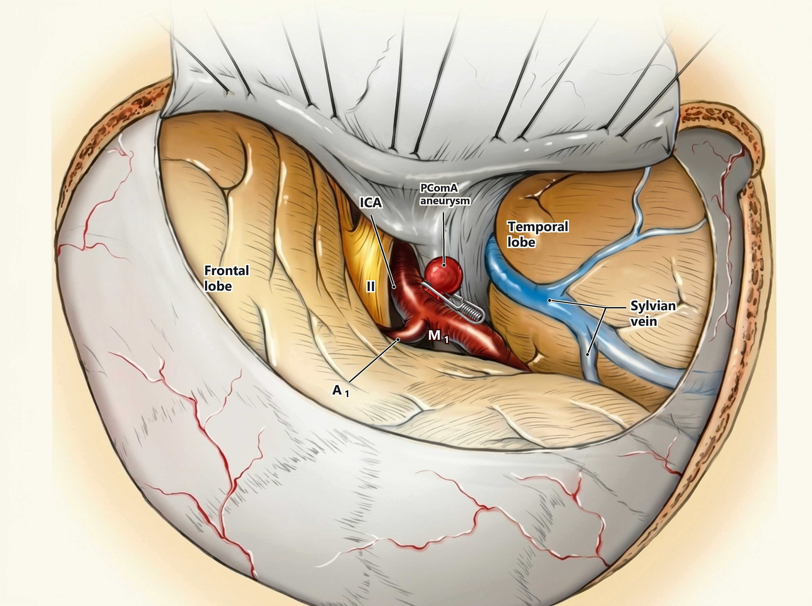

17:53
5G
•••
100%
2 AM Crisis
Consults
Bedside
Calculators
Atlas (20)
NeuroCall
BUILD 101
● LIVE VERIFIED
📖 Curated Atlas Review Studio (20 Plates)
⚡ Quick Navigation & Bedside Jumps
Anterior Circulation Aneurysm Clipping
PLATE 1 OF 19 • SKULL BASE & VASCULAR
Curated Master
assets/plate_aneurysm.jpg

+
-
⟲
◀ Previous Plate (←)
Next Plate (→) ▶
20 Curated Master Plates
All (20)
Craniotomies (7)
Skull Base (5)
Spine & CVJ (8)
📝 DR. MOHIT'S RECOMMENDATIONS FOR THIS PLATE
plate_pterional_3d
📋 Copy Recommendation
Jump directly to any tab, bedside hardware guide, or emergency triage protocol in the live emulator:
Bedside Hardware Suites (Tab 3)
⚡ Kocher's EVD
⚡ Camino Bolt & Waves
⚡ Lumbar Puncture (LP)
⚡ Lumbar Drain
⚡ Radial Arterial Line
⚡ Ultrasound IJV CVC
Emergency Triage (Tab 1 & Tab 2)
🚨 Uncal & Herniation Pupils
🚨 Epidural Hematoma (EDH)
🚨 Subdural Hematoma (SDH)
🧠 Brainstem Reflex Ladder
🧮 Osmotherapy & Scoring